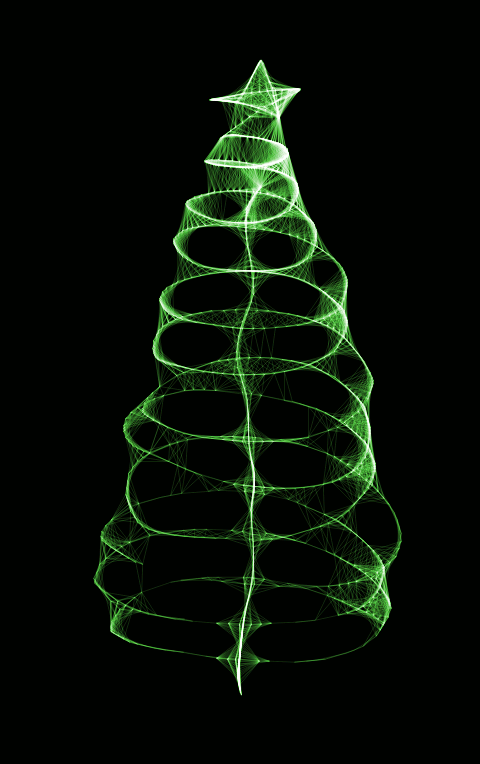

!!!
Прошла обучение по работе с ПО •
Сама провела первое обучение по работе с ПО •
Впервые занималась организацией стенда для выставки •
Сдала заказчику первую документацию •
Освоила новые программы для работы над проектами
Устроился на работу •
Успешно разработал и собрал конструкцию •
Проработал полгода, получил много нового трудового опыта •
За год вела 15 расчетных счетов в двух организациях •
За пол года освоила больше 47 млн в казначействе. Можем продавать платные консультации =) •
Прошла испытательный срок •
Разобралась с основными функциями 1С •
Вникла в процесс работы организации •
С помощью коллеги выстроили рабочую схему по ведению учета документов в 1С УНФ • Наладила хорошие отношения с коллективом и ввела новые традиции по проведению праздников •
Радовал руководителя своевременным выполнением его поручений •
Наладил межконтинентальные отношения с дружественными народами •
Занимался эффективным кадровым подбором •
Отработал критерии KPI ДИСЦИПЛИНА и ЭФФЕКТИВНОСТЬ •
Монтаж/настройка композит 23 • Сборка/настройка/ПНР Втулки •
Получил практический опыт работы с Modbus •
В условиях командировки быстро выявили и исправили неисправность, которая бы не дала запустить линию •
Провела в командировках 35 дней •
Впервые работала на стенде на выставке •
Заняла 2 место на обучении у Сигнума •
Подключала новые для себя стойки ЧПУ •
Подготовил 3-х специалистов для работы в компании •
Провел в командировках 59 дней (одного дня до ровного счета не хватает) •
В рамках командировки в Калугу установил свой личный рекорд (2 компании в день, 6 компаний за три дня) •
Научился уверенно держаться при общении на уровне ЛПР •
Познакомился с нашим дружным коллективом •
С помощью коллег усилил свои навыки по разработке ПП для СПРУТКАМ •
Начал прямое общение по техническим вопросам с представителями предприятий •
У компании появился фирменный стиль (многое уже отразилось в печатной полиграфии) и сайт •
Запустила на сайт трафик, который приносит заявки и интересных клиентов • Смогла собрать головоломки-пазлы предназначенные для сувенирной продукции))) •
Спустя много лет сдула пыль с диплома и поняла, как можно связать свои профессиональные университетские знания с любимой профессией •
Гораздо глубже разобрался в ЧПУ - W и СПРУТКАМ •
Получил возможность проводить вебинары для заказчиков по всем системам без привлечения технических специалистов •
Получилось наладить хорошие личные отношения с вендорами нашего ПО •
Освоила суть новой работы •
Разработала новый шаблон договора на внедрение СПРУТ-ОКП и СПРУТ-ТП-Нормирование •
Учавствовала в организации оффлайн встречи •
Провёл 30 дней в выездах к заказчикам •
Впервые курировал работу субподрядчика •
Получил статус специалиста по электробезопасности •
Прошёл больше 10 км по цехам •
Спонсор РЖД. 40 купленных билетов на электрички •
Написал и внедрил 5 постов •
Ни дня на больничном •
Был на учебе в Набережных Челнах и получил сертификат •
Был на внедрении в Сколково •
Провел в командировках 14 дней •
Первая командировка в другую страну •
Внедрение сложной собственной разработки •
Запуск Helpdesk • Выполнил все виды технических задач •
Сохранен рассудок при безумном количестве и многообразии задач •
Потрачены время, терпение и нервы на обучение новых сотрудников. Результат положительный. •
Преодоление себя в решении задачи, которая изначально вызывала только раздражение. Вершина взята ))) •
Получил первую в жизни каску •
Познакомился с нашим дружным коллективом •
С помощью коллег усилил свои навыки по разработке ПП для СПРУТКАМ •
Начал прямое общение по техническим вопросам с представителями предприятий •
У компании появился фирменный стиль (многое уже отразилось в печатной полиграфии) и сайт •
Запустила на сайт трафик, который приносит заявки и интересных клиентов •
Смогла собрать головоломки-пазлы предназначенные для сувенирной продукции))) •
Спустя много лет сдула пыль с диплома и поняла, как можно связать свои профессиональные университетские знания с любимой профессией •
МЫ МОЛОДЦЫ!
С НОВЫМ ГОДОМ!
!!!
